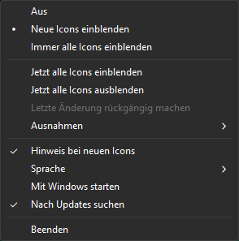

TrayReveal
Eine kleine Tray-App für Windows 11, die die Symbole im Infobereich sichtbar hält.
Windows 11 versteckt jedes neue Tray-Icon hinter dem ^-Überlaufmenü und bietet das frühere Häkchen „Immer alle Symbole anzeigen“ nicht mehr an. TrayReveal bringt diesen Komfort zurück: Es beobachtet die Icon-Liste des aktuellen Benutzers und blendet neue Icons sofort ein – oder auf Wunsch alle.
Rückmeldungen und Fehlerberichte gern als Issue. Keine Verbindung zu Microsoft und nicht von Microsoft unterstützt. Windows ist eine Marke der Microsoft-Unternehmensgruppe.
Funktionen
- Blendet jedes neue Tray-Icon sofort ein oder hält alle Icons sichtbar
- Ausnahmen für Apps, deren Icons immer ausgeblendet bleiben sollen
- Übernimmt deine Wahl, wenn sich eine App in einen neuen Ordner mit Versionsnummer aktualisiert
- Läuft als Standardbenutzer, ohne Administratorrechte, schreibt nur in
HKCU - Kein Fenster, nur ein Tray-Icon mit Kontextmenü
- Keine Telemetrie; einziger Netzwerkzugriff ist eine abschaltbare Update-Prüfung (siehe Datenschutz)
Installation
Eine der Dateien unter Releases herunterladen:
- Installer
TrayReveal-<Version>-windows-x64-setup.exe– installiert für den aktuellen Benutzer (Standard, ohne Administratorrechte) oder für alle Benutzer, legt einen Startmenü-Eintrag an und startet TrayReveal auf Wunsch mit Windows. Entfernen lässt es sich unter Einstellungen → Apps. - Portabel
TrayReveal-<Version>-windows-x64.zip– in einen beliebigen Ordner entpacken undTrayReveal.exestarten. Der Ordnerlangbleibt neben dem Programm.
Das Programm ist nicht signiert, deshalb warnt SmartScreen beim ersten Start eventuell: „Weitere Informationen“ → „Trotzdem ausführen“. Zu jeder Datei gibt es eine .sha256-Datei zum Prüfen des Downloads, und die Release-Notizen verlinken einen VirusTotal-Scan. Änderungen stehen im Changelog.
Installer-Parameter
Der Installer versteht die üblichen Inno-Setup-Parameter, z. B. für eine stille Installation:
| Parameter | Wirkung |
|---|---|
/CURRENTUSER | Nur für den aktuellen Benutzer installieren (Standard) |
/ALLUSERS | Für alle Benutzer installieren (fragt nach Administratorrechten) |
/DIR="C:\Pfad" | Installationsordner |
/SILENT, /VERYSILENT | Ohne Assistent (mit oder ohne Fortschrittsfenster) |
/SUPPRESSMSGBOXES | Keine Meldungsfenster bei stiller Installation |
/TASKS="autostart,desktopicon" | Gewählte Optionen; autostart startet TrayReveal für den installierenden Benutzer mit Windows, desktopicon legt eine Desktop-Verknüpfung an. Ohne den Parameter ist der Autostart an und die Desktop-Verknüpfung aus |
/NOICONS | Kein Startmenü-Eintrag |
/LOG="C:\Pfad\setup.log" | Protokolldatei schreiben |
Beispiel: TrayReveal-1.1.0-windows-x64-setup.exe /VERYSILENT /SUPPRESSMSGBOXES /ALLUSERS /TASKS="autostart"
Einstellungen wie Modus oder Sprache gelten pro Benutzer und werden vom Installer nicht gesetzt. Die Deinstallation entfernt das Programm und den Autostart-Eintrag, lässt die Einstellungen in HKCU\Software\TrayReveal aber stehen.
Bedienung
TrayReveal.exe starten. Beim ersten Start merkt es sich nur die bereits vorhandenen Icons und ändert nichts. Ein Rechtsklick (oder Linksklick) auf das Tray-Icon öffnet das Menü:

- Aus – nur beobachten, nichts ändern
- Neue Icons einblenden (Standard) – jedes neue Icon wird einmal eingeblendet; blendest du es später in den Windows-Einstellungen aus, bleibt es ausgeblendet
- Immer alle Icons einblenden – hält alle Icons sichtbar, außer den Ausnahmen
- Jetzt alle Icons einblenden / ausblenden – einmalige Aktionen; Ausblenden ist nicht verfügbar, solange immer alle Icons eingeblendet werden
- Ausnahmen – listet die Apps mit ihren Icons; mit rotem X markierte Apps bleiben immer ausgeblendet, ein erneuter Klick blendet sie wieder ein (außer im Modus „Aus“)
- Letzte Änderung rückgängig machen – nimmt die letzte Aktion aus dem Menü zurück (Modus, Alle ein-/ausblenden, Ausnahmen), solange TrayReveal läuft
- Nach Updates suchen – prüft einmal täglich, ob es eine neue Version gibt, und meldet sie mit einem Hinweis und dem Menüpunkt Version … herunterladen
- Hinweis bei neuen Icons, Sprache, Mit Windows starten, Beenden
Das Menü folgt dem hellen oder dunklen Modus der Taskleiste.
Wenn sich eine App in einen neuen Ordner mit Versionsnummer aktualisiert (zum Beispiel app-1.2.3 oder ein Microsoft-Store-Paket), legt Windows dafür einen neuen, ausgeblendeten Eintrag an. TrayReveal erkennt die gleiche App und übernimmt deine bisherige Wahl. Ausnahmen gelten für alle Versionen einer App. Gibt es mehrere ältere Versionen, zählt die zuletzt geänderte.
Einträge, deren Programm drei Tage am Stück fehlt, werden aus den Tray-Einstellungen von Windows entfernt, damit sich alte Versionen nicht ansammeln. Im Modus „Aus“ wird nichts entfernt.
TrayReveal.exe --once wendet die aktuellen Einstellungen einmal ohne Tray-Icon an und beendet sich, etwa für die Aufgabenplanung.
Sprachen
TrayReveal gibt es in 51 Sprachen, darunter deutsche Dialekte und einige Spaßsprachen; LANGUAGES.md listet alle Codes. Mit Automatisch folgt es der Anzeigesprache von Windows und fällt sonst auf Englisch zurück.
Die Übersetzungen wurden von Claude (KI) erzeugt. Die meisten hat noch keine Muttersprachlerin und kein Muttersprachler geprüft; welche geprüft sind, zeigen LANGUAGES.md und der Kopf jeder Datei. Wenn dir ein Fehler auffällt oder du eine bessere Formulierung kennst, eröffne gern ein Issue oder einen Pull Request. Mit Einverständnis wird die prüfende Person mit ihrem GitHub-Namen in der Sprachdatei und in LANGUAGES.md genannt.
Die Texte liegen in einfachen Textdateien, benannt nach dem Sprachcode, z. B. de.lang oder pt-BR.lang, mit einem Schlüssel = Text pro Zeile. Für eine neue Sprache kopierst du lang/en.lang, übersetzt die Texte nach dem = und lässt die Schlüssel und Platzhalter wie {name} unverändert. Fehlende Texte kommen aus der Rückfallsprache (language.fallback), sonst aus Englisch.
Sprachdateien werden aus dem Ordner lang neben dem Programm und aus %APPDATA%\TrayReveal\lang gelesen. Der zweite Ordner braucht keine Administratorrechte und seine Texte haben Vorrang, dort kannst du also eine Sprache ergänzen oder einzelne Texte ändern.
Updates
Ist Nach Updates suchen eingeschaltet, prüft TrayReveal kurz nach dem Start und danach einmal täglich, ob es eine neue Version gibt, und meldet sie mit einem Hinweis und dem Menüpunkt Version … herunterladen. Updates werden nie automatisch heruntergeladen oder installiert, das Menü verlinkt nur auf die Release-Seite.
Funktionsweise
Windows speichert die Sichtbarkeit jedes Tray-Icons pro Benutzer unter HKCU\Control Panel\NotifyIconSettings, ein Unterschlüssel pro Icon. Der Wert IsPromoted legt fest, ob das Icon in der Taskleiste angezeigt (1) oder im Überlaufmenü versteckt wird (0); bei Icons, die noch nie angezeigt wurden, fehlt der Wert.
TrayReveal wartet auf Änderungen an diesem Schlüssel (ohne regelmäßiges Abfragen), setzt oder erzeugt IsPromoted je nach gewähltem Modus und lässt alles andere unverändert. Es ist derselbe Wert, den der Schalter in den Windows-Einstellungen schreibt, einzelne Icons lassen sich dort also weiterhin ändern.
Der Registry-Schlüssel ist von Microsoft nicht dokumentiert und kann sich mit künftigen Windows-Updates ändern. Ändert sich sein Aufbau, tut TrayReveal nichts, statt zu raten.
Datenschutz
- Netzwerkzugriff gibt es nur für die abschaltbare Update-Prüfung: Kurz nach dem Start und danach einmal täglich ruft TrayReveal die Angaben zum neuesten Release von
api.github.comab. Dabei wird nur abgerufen, nichts über dein System oder deine Icons gesendet oder hochgeladen; GitHub sieht nur die üblichen Anfragedaten wie die IP-Adresse und den Programmnamen mit Version (TrayReveal/<version>). Abschalten lässt sie sich im Menü mit Nach Updates suchen. Updates werden nie automatisch heruntergeladen oder installiert, das Menü verlinkt nur auf die Release-Seite. - Keine Telemetrie
- Einstellungen liegen in der Registry unter
HKCU\Software\TrayReveal